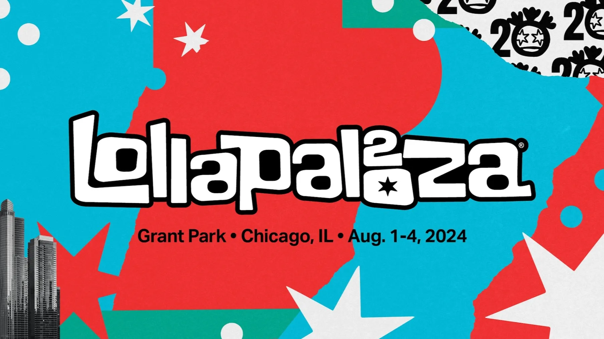
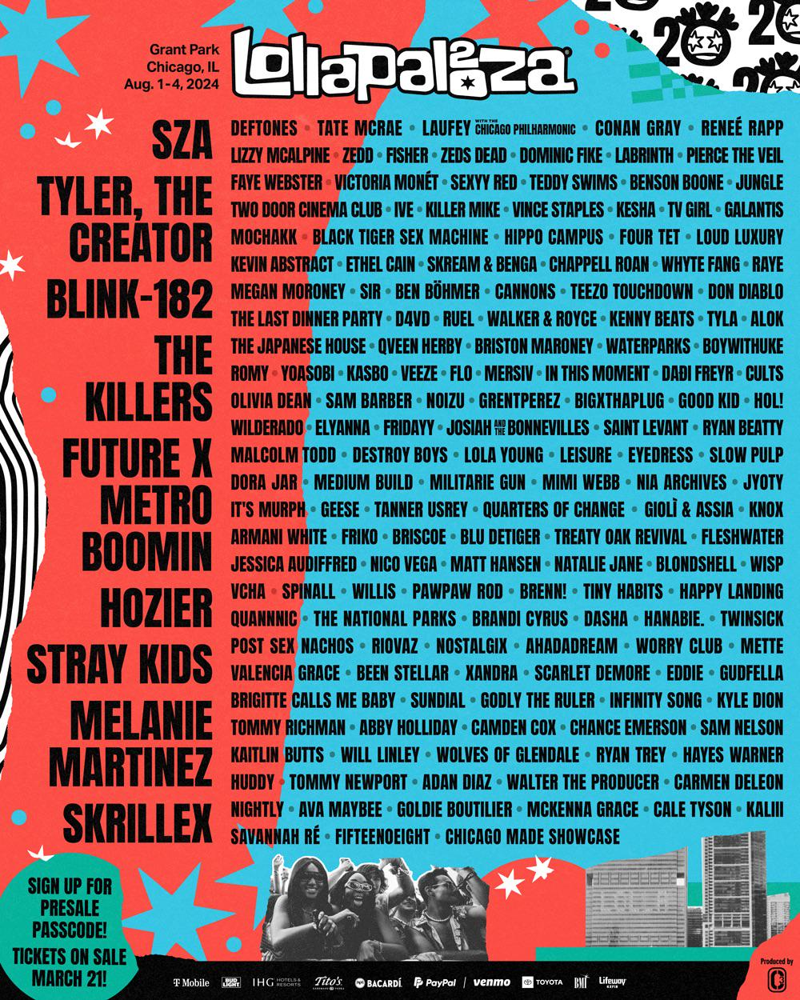
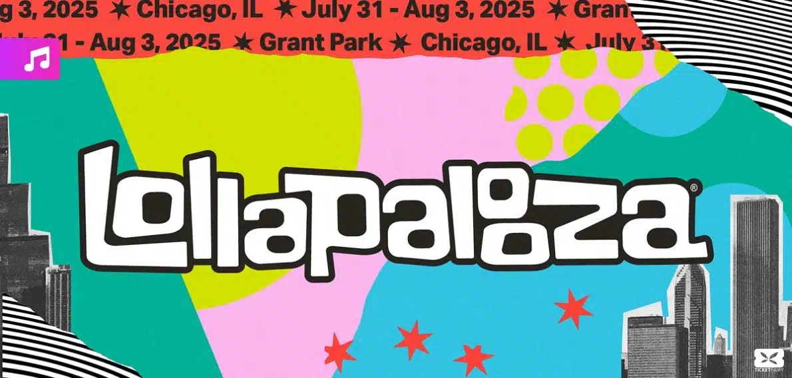
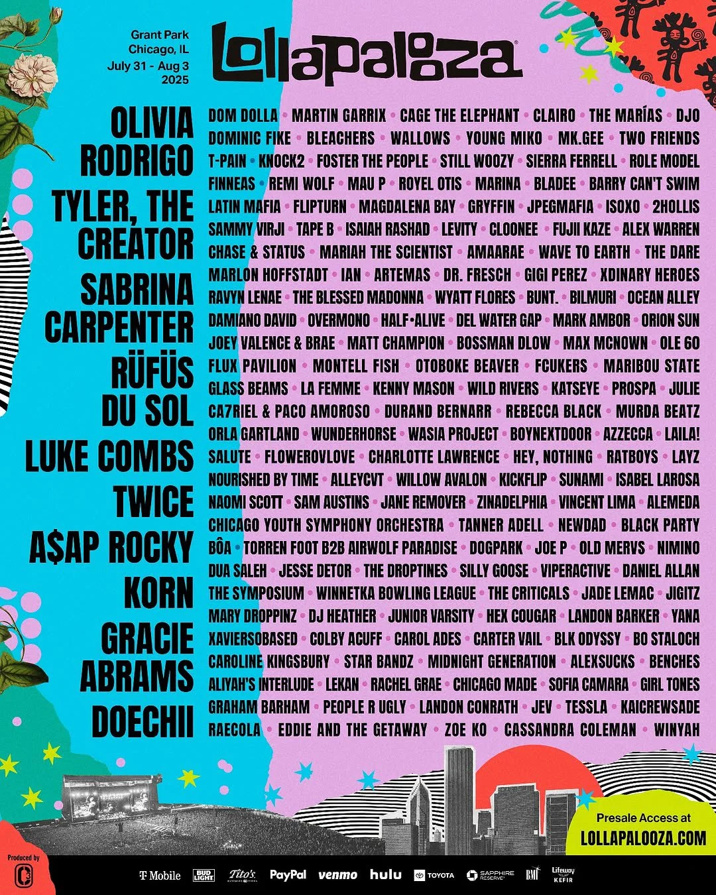

This was the first time that I went to a music festival. I Only went on two of the four days that being Thursday and Saturday. I saw a lot more than what I'm showing but I really don't remember them because they were DJ's. Also for my sanity I'm not writing the setlist for all of the shows here. Just click on the name and it will take you to the setlsit.

The lineup of everyone at Lollapalooza 2024

I'm so happy that I got to go again the next year. But this also made me bummed that I couldn't go in 2026. Still an absolutely amazing experience.

The lineup of everyone at Lollapalooza 2025